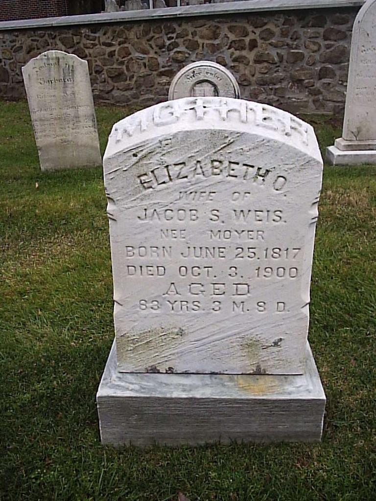
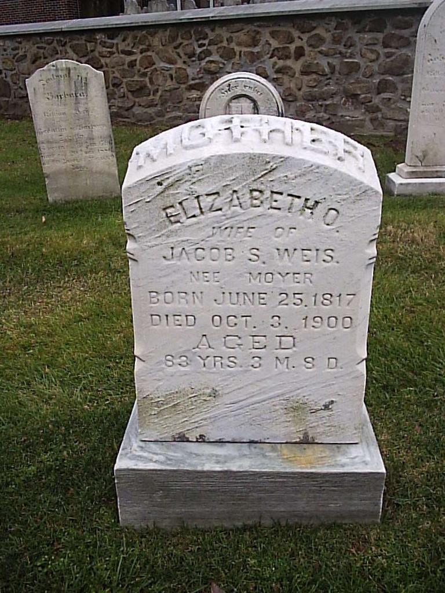
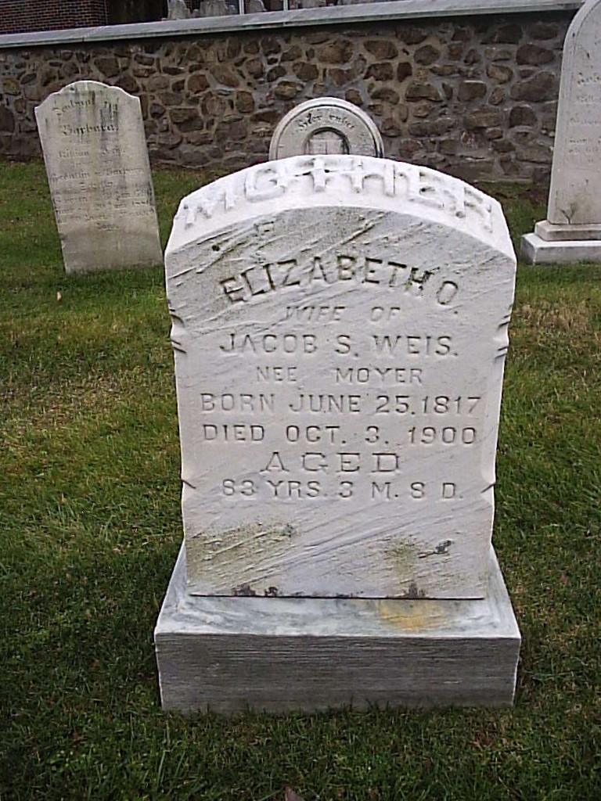

Jacob Shelly WEISS
born 09 Feb 1825
died 10 Aug 1899
Elizabeth Oberholtzer MOYER
born 25 Jun 1817
died 03 Oct 1900
(great-grandparents of Titus Hartman)
Elizabeth Moyer WEISS
born 08 Apr 1857
died 11 Jun 1946
Catharine Moyer WEISS
born 21 May 1859
died 14 Oct 1943
Jacob and Elizabeth are buried together at Boyertown Mennonite Cemetery in Boyertown, PA.

 
